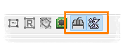

|  |
These two buttons in the toolbar allow to
- Swap left and right mouse button, i.e. image panning is done with the left mouse button and selection with the right mouse button
- Swap Q/W and mouse wheel, i.e. change of slices will be done using Q/W and zoom in/out using the mouse wheel
|